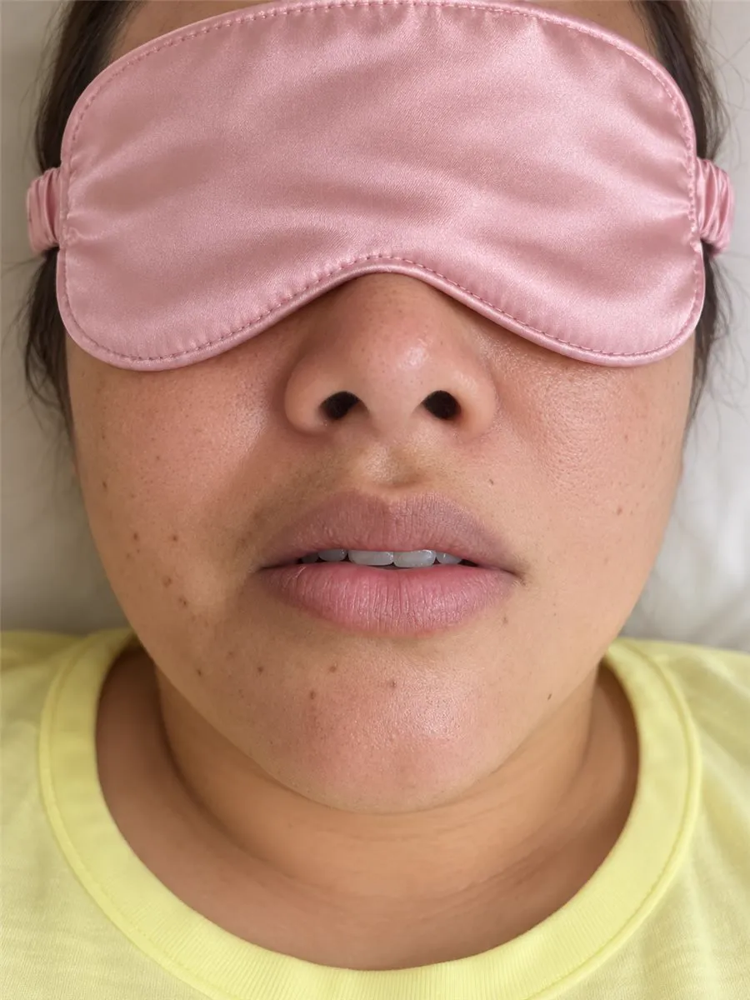
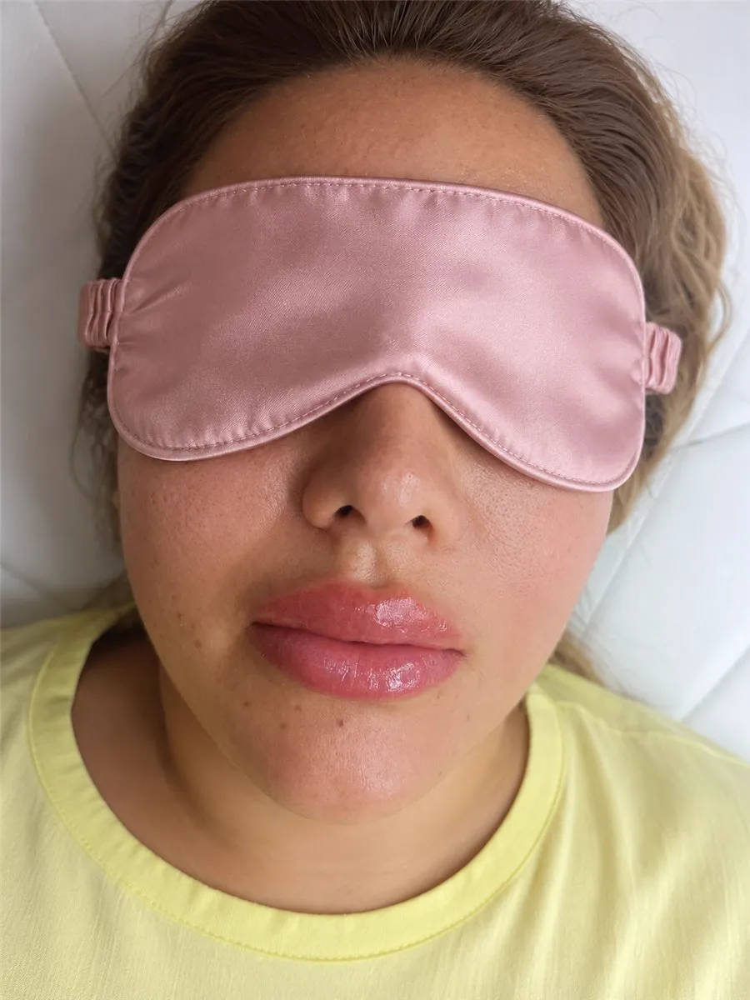
Antes
Despues
Desliza para comparar
Micropigmentacion labial (lip blush) a medida: realzamos tu tono natural, definimos la forma y unificamos el color. Una sesion, resultado de meses.


Desliza para comparar
Evaluacion, diseño y aplicacion en una sola cita.
Protocolo de confort: casi no se siente.
Desde tonos nude naturales hasta coral y rosados.
Revision de control incluida para ajustar el resultado.
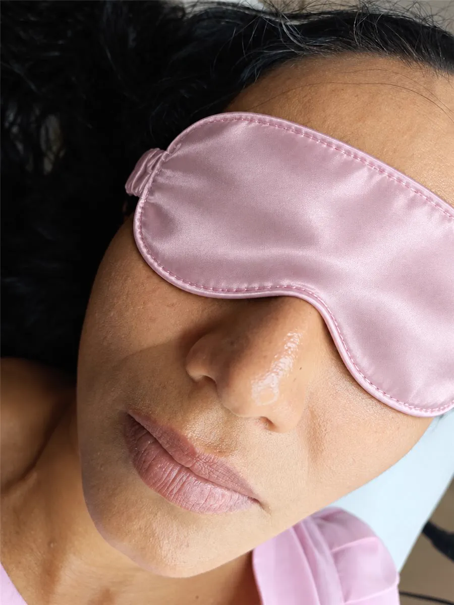
Que es
Es una tecnica que implanta pigmento en la capa superficial del labio para dar color, uniformidad y forma de forma natural. Tambien se le llama lip blush.
Beneficios
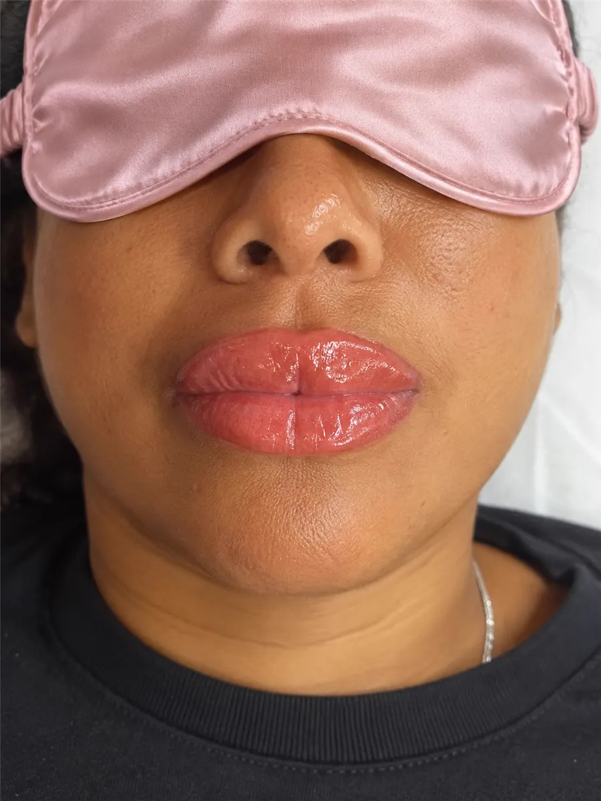
Se unifica el tono y se disimulan manchas o palidez.
Recuperamos el borde y corregimos asimetrias leves.
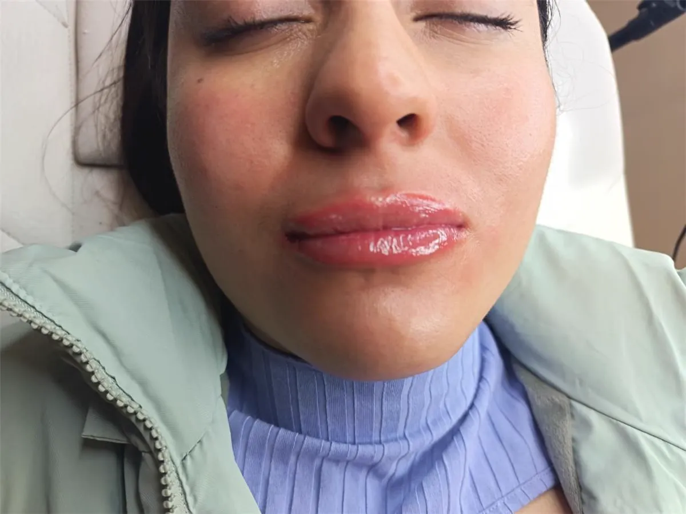
Acabado fresco y luminoso con apariencia de labio cuidado.
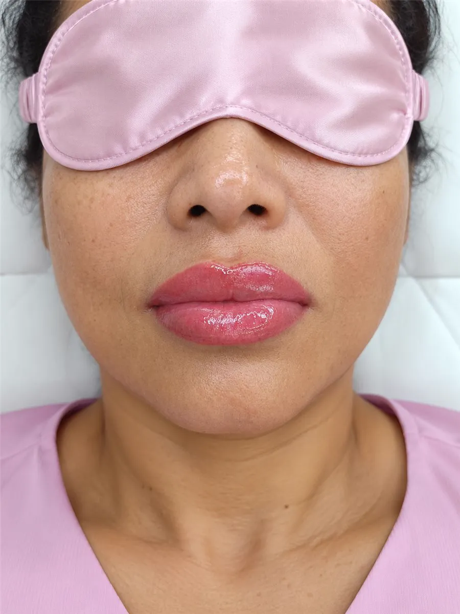
Sin retoque diario: el color te acompaña por meses.
El proceso
Un proceso simple y cuidado en 3 pasos. Tu eliges el color, nosotros nos encargamos de que se vea natural y armonioso con tu rostro.
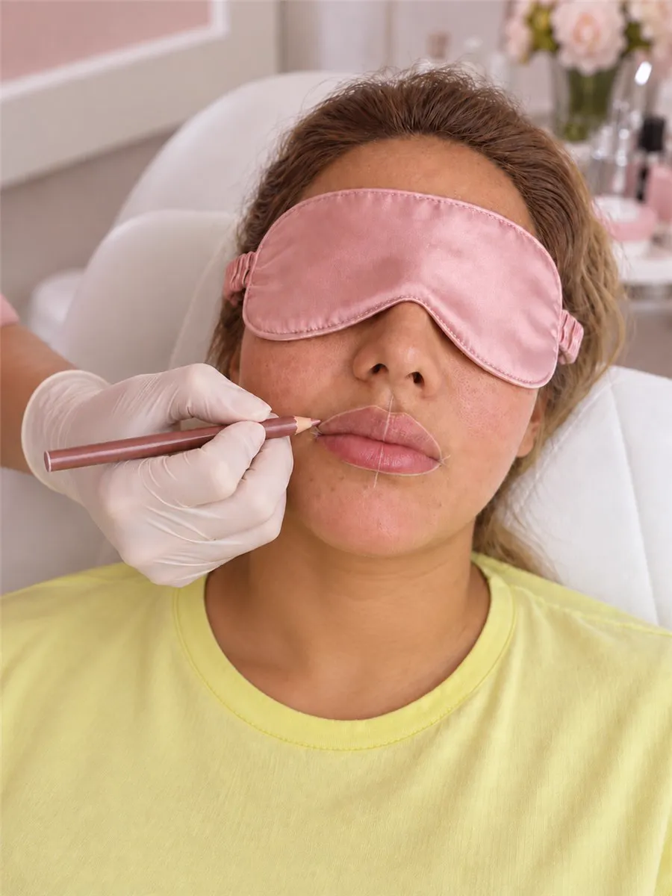
Paso 1Analizamos tu tono, forma y lo que quieres lograr. Diseñamos el contorno y hacemos una prueba de color contigo para que apruebes el resultado antes de empezar.
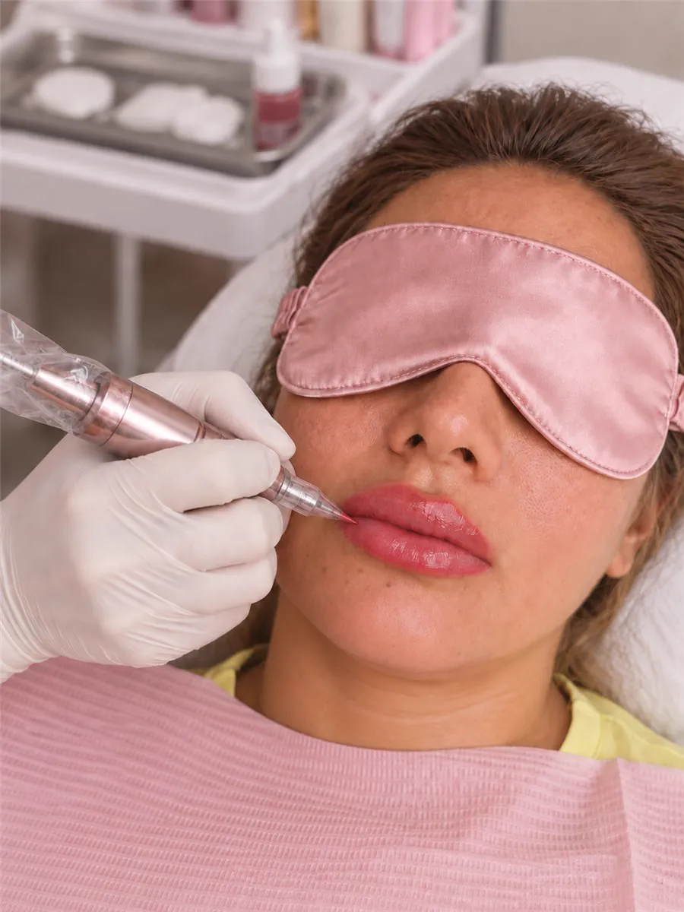
Paso 2Aplicamos el pigmento con tecnica suave y anestesico topico. Dura aproximadamente 1:30 h y, gracias al protocolo de confort, casi no se siente.
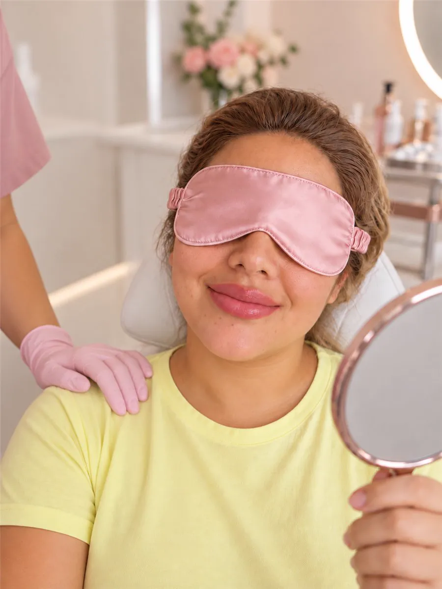
Paso 3A las 4 a 6 semanas revisamos el resultado. Ajustamos color y definicion para que quede perfecto y parejo. La revision esta incluida.
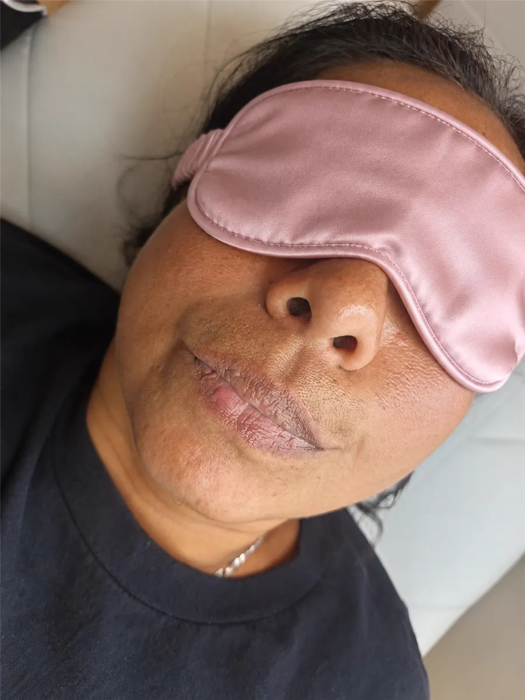
Correccion de color
No todas buscan mas color: muchas quieren neutralizar un labio oscuro o desuniforme. Para eso hacemos una correccion previa que equilibra el tono y prepara el labio para el color final.
Resultados reales
Mueve la barra y compara. Colores suaves, bordes definidos y un acabado natural que se ve bien todos los dias.
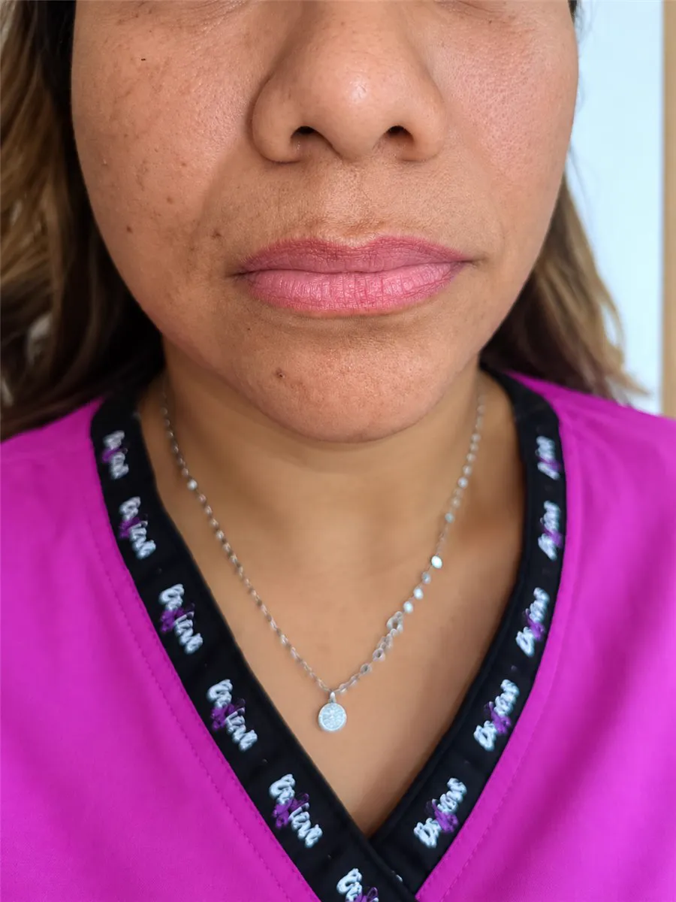
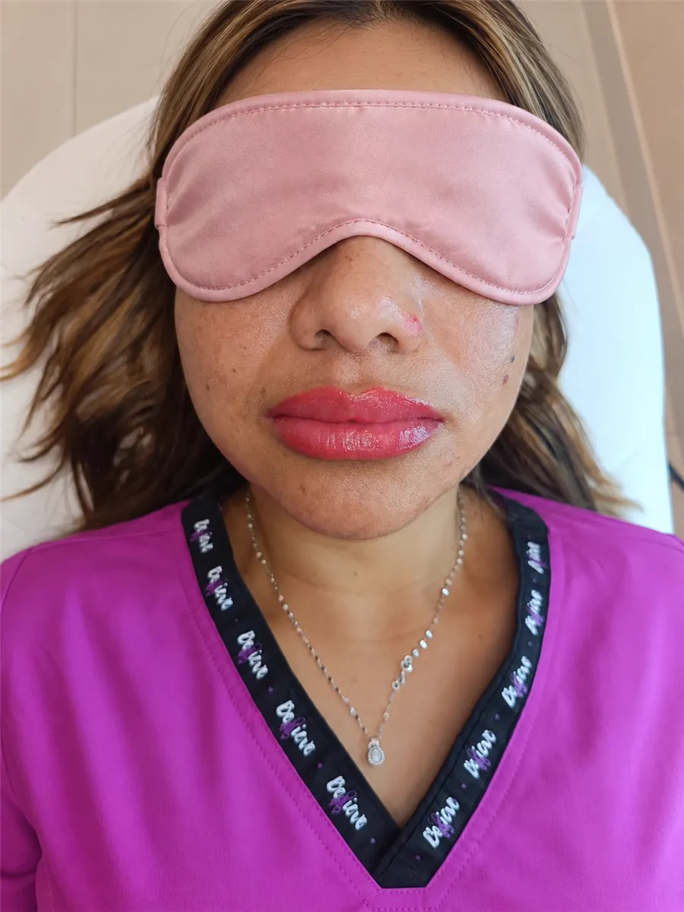
Precio claro
Confianza
"Pense que iba a doler y casi no senti nada. El color quedo natural, justo lo que queria."
Camila R. Lip blush tono nude"Tenia los labios oscuros y desuniformes. Me los corrigieron y ahora se ven parejos y sanos."
Andrea M. Correccion de labio oscuro"La atencion fue super delicada y el resultado duro muchisimo. Ya no uso labial todos los dias."
Valeria C. Micropigmentacion labialTodo claro antes de agendar
Usamos anestesico topico, asi que casi no se siente. La mayoria lo describe como una experiencia comoda y tolerable.
Aproximadamente 1 hora y 30 minutos, incluyendo evaluacion, diseño y aplicacion.
Entre 1 y 3 años segun tu piel y cuidados. Incluye una revision de control para ajustar color y definicion.
Si. Diseñamos el color a medida y hacemos una prueba antes de aplicar. Desde nude natural hasta coral o rosados.
Si. Hacemos una correccion o neutralizacion previa para unificar el tono antes del color final.
Hay una primera fase de cicatrizacion y el acabado final se aprecia despues de la revision, entre 4 y 6 semanas.
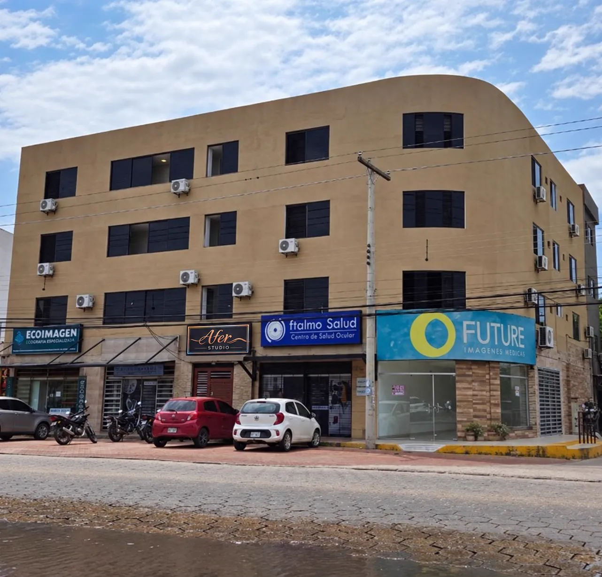
Ubicacion
Llegar es facil: busca el letrero de Afer Studio en la fachada. Toca el boton y Google Maps te lleva directo hasta la puerta.
Como llegarAgenda tu cita
Escribenos por WhatsApp y te ayudamos a elegir el tono y el mejor momento para tu micropigmentacion labial en Santa Cruz de la Sierra.